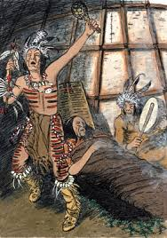
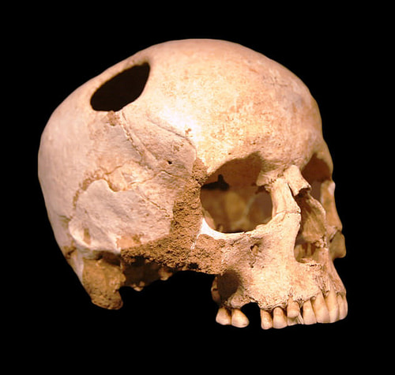

🏺 Origines (Préhistoire → -3000) La médecine trouve ses premières racines dans les sociétés préhistoriques, bien avant l’apparition de l’écriture. À cette époque, les êtres humains ne possèdent aucune connaissance scientifique du corps. Les maladies sont perçues comme des manifestations surnaturelles, souvent attribuées à des esprits, des forces invisibles ou des punitions divines.
Les soins sont assurés par des chamans ou guérisseurs, qui utilisent des rituels, des incantations et des plantes médicinales. Malgré leur caractère mystique, ces pratiques reposent aussi sur une forme d’observation empirique : certaines plantes sont reconnues pour leurs effets réels (calmer la douleur, cicatriser, etc.).

Une des pratiques les plus impressionnantes de cette période est la trépanation, une opération consistant à percer le crâne. Des découvertes archéologiques en Europe et en Afrique montrent que certains patients survivaient à cette intervention, ce qui témoigne d’un savoir-faire surprenant pour l’époque.
